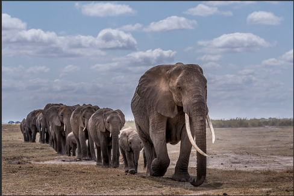

C'est l'éléphant, il mesure entre 3,5 et 4,5 m de haut pour 5 à 7 t. Il a besoin d'au moins 140 kg de végétaux par jour.
Les défenses pèsent en moyenne 25 kg chez un male adulte. Mais les plus lourdes font 3,5 m pour 140kg
La trompe, qui est à la fois une mais, un tyau d'arrosage et un aspirateur, serait composée de 100 100 muscles!!!
Les éléphants se déplacent en troupeux dirigs par de veilles femmelles très expérimentées, dotées d'une "mémoire d'éléphant". Durant la saison sèche, elles se souviennent des points d'eau situés à des dizaines de kilomètres.